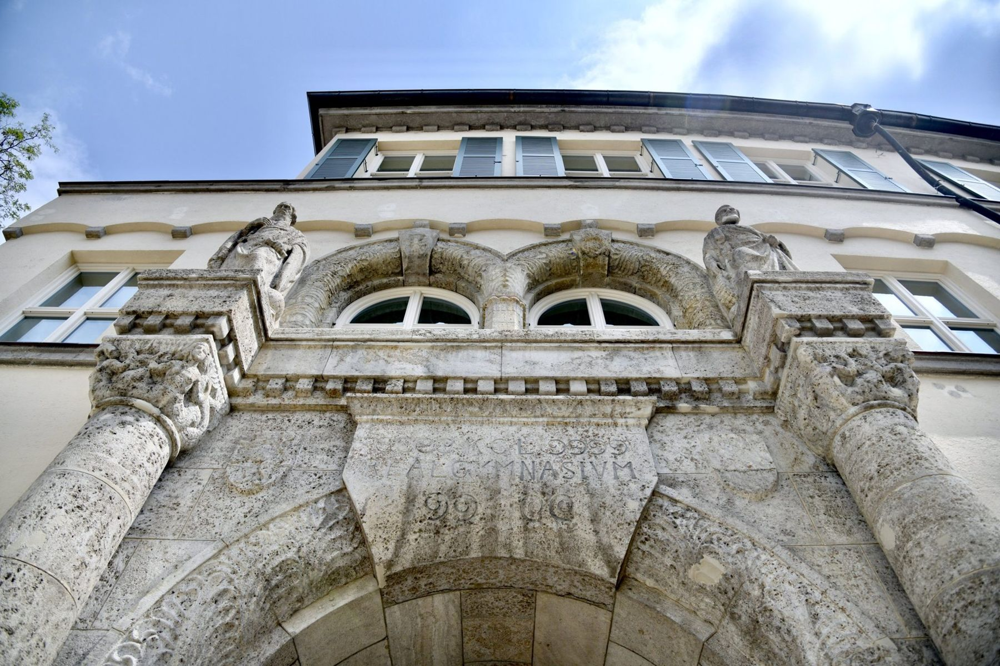
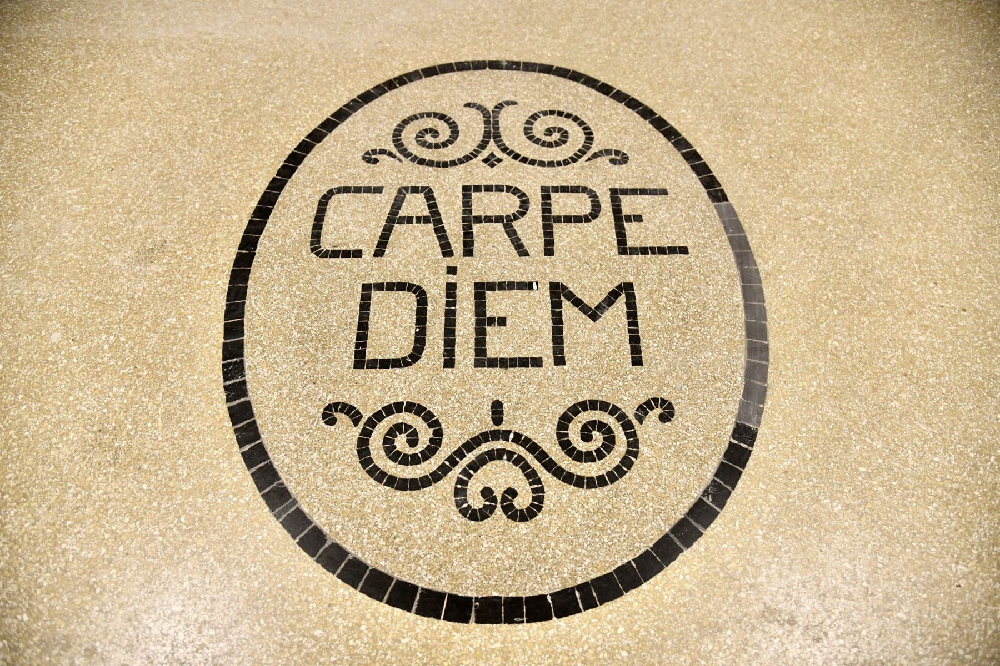
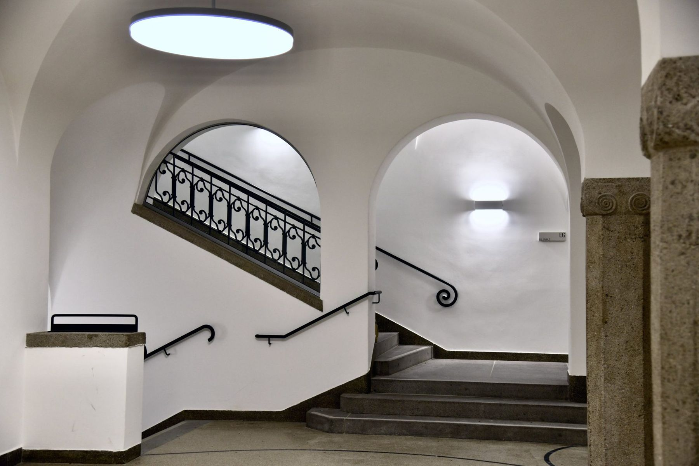
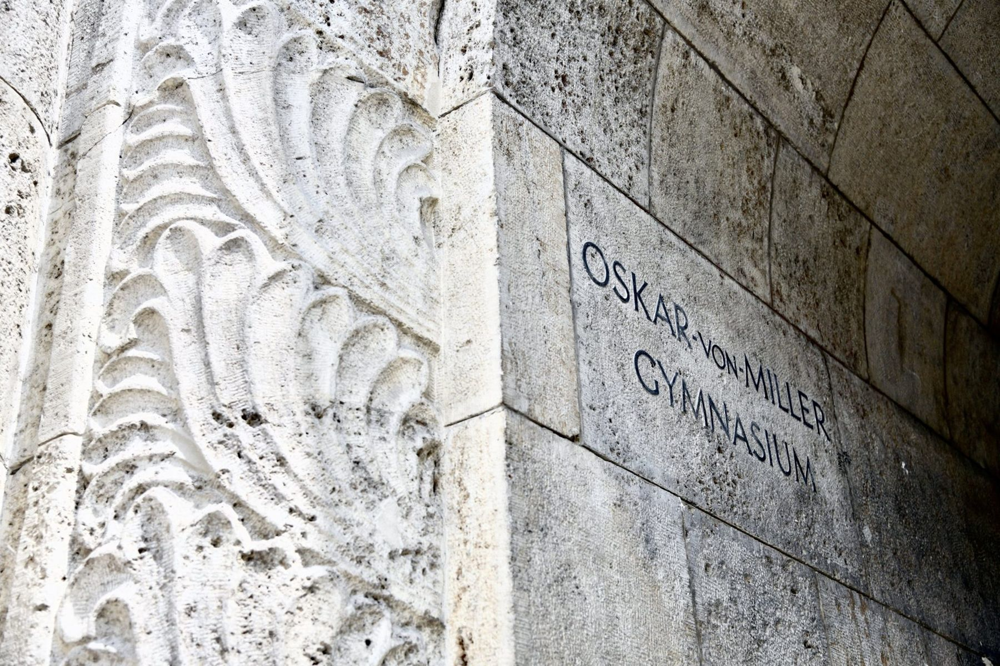
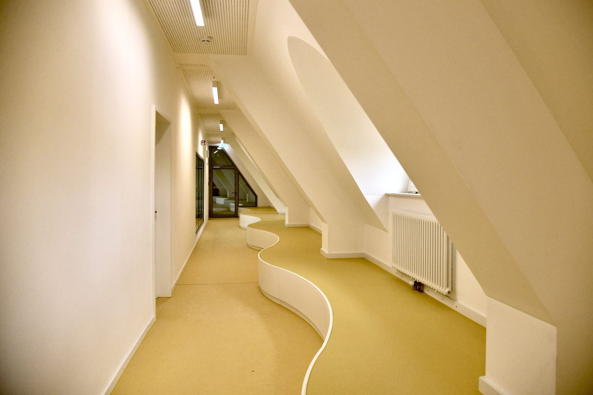
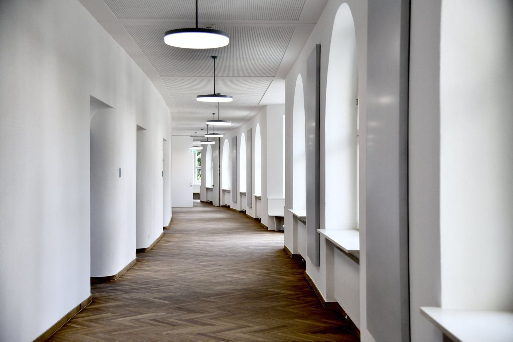
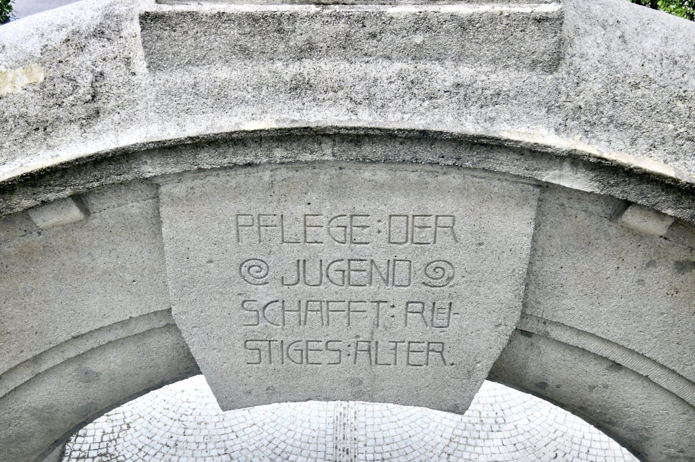

Förderverein des Oskar-von-Miller-Gymnasiums · seit 1991
Für ein Haus, in dem man gern lernt.
Die Freunde des OvMG e.V. fördern Bildung und Erziehung am Oskar-von-Miller-Gymnasium in München – mit den Beiträgen ihrer Mitglieder und mit Spenden.
Gewölbe, Wendeltreppe, lateinische Inschriften: Das Stammgebäude von 1912 ist frisch saniert – und ein Ort, an dem Generationen gelernt haben.









Fotos: Britta Mangold Nutzung klären

„Pflege der Jugend schafft rüstiges Alter.“
Der Spruch unter der Kapitolinischen Wölfin ist so etwas wie das inoffizielle Motto unseres Vereins.
Mitglied werden
Für alle, die sich der Schule verbunden fühlen.
- Jahresbeitrag30 €
- Schüler, Studierende, Auszubildende10 €
Spenden
Gemeinnützig und steuerlich absetzbar – gern auch zweckgebunden.
- Empfänger
- Freunde des OvMG e.V.
- IBAN
- DE69 7015 0000 0111 1418 18
- BIC
- SSKMDEMM
- Bank
- Stadtsparkasse München

Kontakt
Vorstand
- Christian J. Hartmann1. Vorsitzender
- Dr. Stephan Ring2. Vorsitzender
- Moritz PöllathKassenführung
Anschrift
Freunde des OvMG e.V.
c/o Oskar-von-Miller-Gymnasium
Siegfriedstraße 22
80803 München